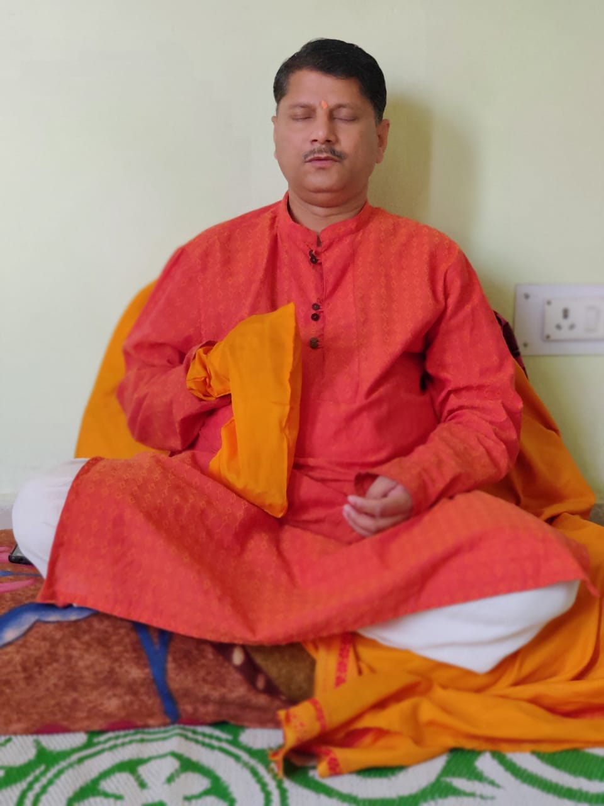

|  |
PT.NEELESH MISHRA
SINCE 1989
Pt.Neelesh Mishra is an astrologer having experience of over 30+ years in pooja path, Vastu shastra, Hast Rekha and Kundli visheshagya.
Also a Principle at Saraswati Vidya Mandir School
|
About:
Pt.Neelesh Mishra is one of the well-known astrologers in Bhopal, Madhya Pradesh.
He leads the 'MANKAMESHWAR JYOTISH KUTIR' the astrology centre.
He has built his reputation by sensitively guiding people on their future actions based on individual horoscopes' best indicators.
He suggests the best possible remedies to his clients for their problems, with his deep knowledge of astrology.
He strives to provide for his client's total well being and holistic living.
SPECIALITY:
Daily, Weekly and Monthly Personalized Horoscope, Vastu Services, Relationship Problems, Kundali Matchmaking, Negative Force, Financial issues, Education and Job, Future Predictions, Marriage Compatibility, Health and Business Problem,
Gemstones & Remedies.